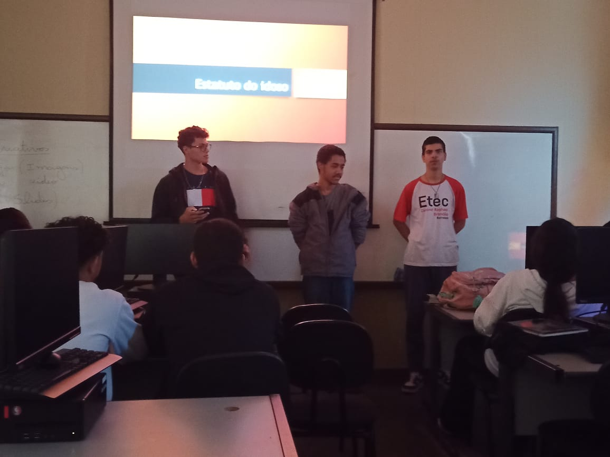

O Estatuto do Idoso é uma lei brasileira que foi criada com o objetivo de garantir os direitos e a proteção das pessoas idosas, considerando suas necessidades específicas. Foi promulgado em 2003 e estabelece uma série de direitos e medidas de proteção para os cidadãos com idade igual ou superior a 60 anos.
Nesta página será apresentado os direitos do estatuto do idoso, como foi criado, a data de quando foi aceita, quais são os objetivos, quais as propostas de direitos, o que fazer caso é rejeitado ou quando a pessoa idosa é desrespeitada e os sites que são indicados para saber de todos os seus direitos como idoso e as formas de como se "proteger" de abusos e atos contra as pessoas de idade avançada.
Israel Silva, Thales H., Felipe / 2°MT
